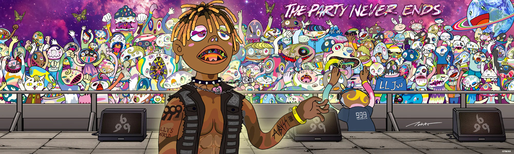

JUICE WRLD
Leyenda del Emo Rap y la cultura del "999".
999 Forever
Jarad Anthony Higgins fue un pilar fundamental en la fusión del rap melódico, el trap y el pop-punk. Su habilidad innata para improvisar canciones completas durante horas marcó a toda una generación.
Proyectos de Culto
Goodbye & Good Riddance
Death Race for Love
Legends Never Die
Pulsa un álbum para liberar las melodías...
Detrás de las Letras
- Su famoso número "999" representaba tomar cualquier situación negativa o dolor (el 666 invertido) y transformarlo en algo positivo.
- Hizo un legendario freestyle de una hora completa sobre instrumentales de Eminem en la estación de radio Westwood One.